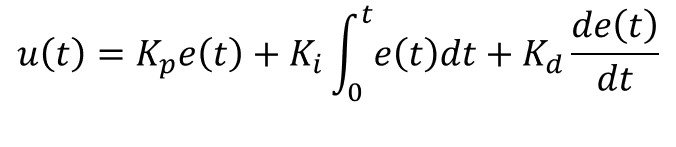
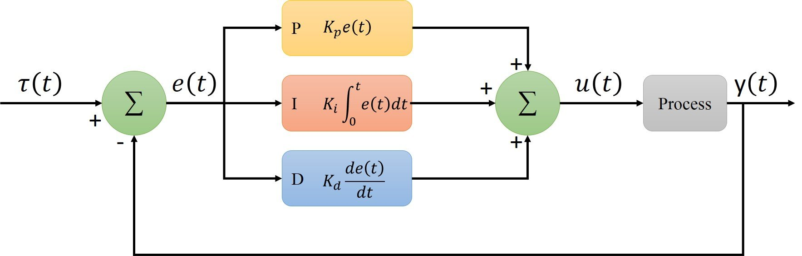

Secure Autonomous Systems
Instructor: Prof. Sibin Mohan, The George Washington University
CSCI 6907/3907 | Fall 2022 | TR 12:45PM - 02:00PM PT | SMTH 115
MP IV-B: Rover controll and attack
Administrivia
| Announcement Date |
Nov. 07, 2022 |
| Submission Date |
Dec. 08, 2022 |
| Submission Time |
11:59PM |
| Total Points |
15 |
Objective
In this MP we assume that we want to attack the rover and with some methodes like brute forcing or anything else we
gaind a privilaged access to the rovers system.
Prelude
Make a new mission
for a making a new mission you have to generate new waypont to show the rover the path it has to take.
what is a waypoint
Waypoints define the route that robot follows. Each waypoint stores a position and robot try to reach that point with it self's limitation.
Rover
controller attack
A control system is a system, which provides the desired response by controlling the output.
PID controller
A proportional-integration-derivative PID controller is a system to control different operations like speed, flow rate, pressure, temperature, and various other processing variables. It provides the ability to automatically maintain the set value and compensate for changes in process and environment.
PID controller uses a closed feedback control system that regulates the required parameters to its set point/desired value by playing with various operations.

Kp, Ki, and Kd are the coefficients of proportional, integral, and deviation terms. These coefficients can also be represented as P, I, and D.
the process of setting the optimal gains for Kp, Ki and Kd to get an ideal response from a control system is called tuning.

The Rover position of the Rover is controlled by two PID controllers, the first one is controlling the speed and the other one is cotrolling the steering angle and
each PID controllers have their own coefficients which they are tuned.
For this Part we want to mess around teh coefficients and see how we can prevent the robot to follow the correct orders.
When you are running ROS on the Rover there is a node listening on topic controller/pid_params which can change the coefficients on run. This is for further tunning the rover in a test.
some how the enginers forgot to encypct or remove this access to the controller.
How to publish data on a ROS topic
There are several ways to publish a data on a certain topic you can write an script in python or cpp to do that
but for this case you can just use the terminal to publish the data just once which you do with following command:
rostopic pub <topic-name> <topic-type> [data...]
to find the tupic-type you can run this command:
rostopic info <topic-name>
And finally for the data structure you can just tap [tab] key twise and terminal will write the structrue for you.
Timming attack
Timming attac covers a large part of definitions as a method to break a security mechanisms of an applicatio by gaining information that is indirectly leaked by the application
form the time an algorithm takes. the other defenition for this type of attack is push a system to miss all the scheduled tmimming. Generally any attack which is related to time is called timming attack.
system scheduler
scheduling is the process of controlling and prioritizing messages sent to a processor.
An internal operating system program, called the scheduler, performs this task.
The goal is maintaining a constant amount of work for the processor, eliminating highs and lows
in the workload and making sure each process is completed within a reasonable time frame.
While scheduling is important to all systems, it is especially important in a real-time system.
Any process in the scheduler has a deadline which is a very important property in real-time systems like this rover.
the task should be done before the deadline.but waht if the adversary can do something to occupy the whole processor resorces and push
the system to miss all deadlines?
The question you have to solve here is how to occupy all the computational resources on the rover while the rover is doing a mission .
Submission Instructions
-
make a mission : generating path of the picture below by creating waypoints that the robot can take.[5 points]
Bonuse : Mathematicaly show that the point your choosing is reachable by rover?[5 points]

-
controller attack: deply the controller attack and make the rover stop middle of the mission and show the result to TA[10 points]
Bonuse : Make the robot follow another path just by changing pid parameters.[5 points]
- timming attack : run the timming attack on all the misiions you have(rectangle, eight, part1) and show the result to the TA.[10 points]